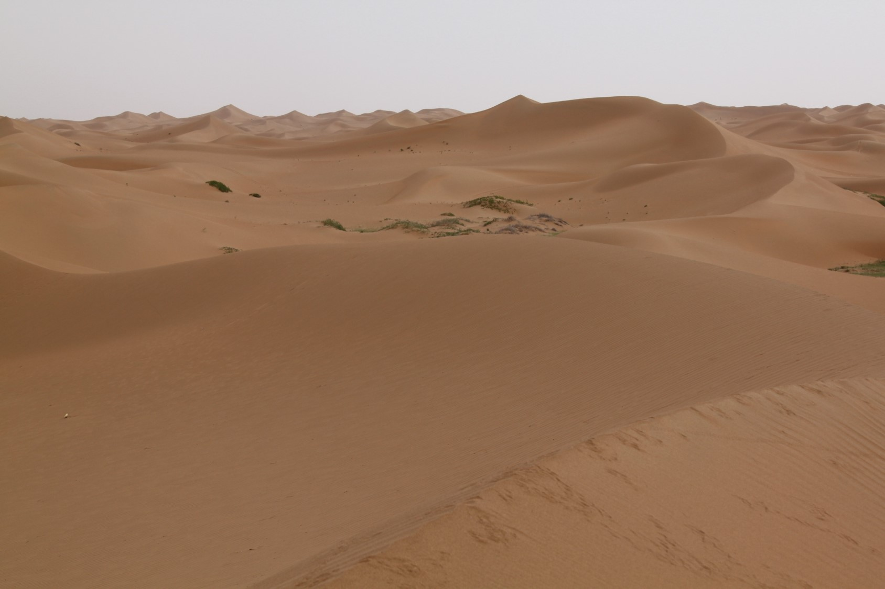

<section class="aboutme">
    <div class="post_content">
        <p>
            Hello! My name is Ove Haugvaldstad. I'm currently in my last year of the master program in Atmospheric Science at the University of Oslo.
            In my thesis I'm modelling dust transport and deposition over the Chinese Loess Plateau using the FLEXPART and FLEXDUST models. I use the models to examine the linkage between deposition and large scale circulation, in order to improve our understanding of the Chinese Loess records. Except for dust I'm interested in computers, coding and modelling. I really like Python and I'm trying to learn the Julia programming language. 
        </p>
        <p>
            On this blog I for the most part write about my experience doing research. I also hope to write some popular science articles here in the future.  
        </p>
            
        <p>
            Photo: Anu Kaakinen
        </p>
    </div>
</section>
